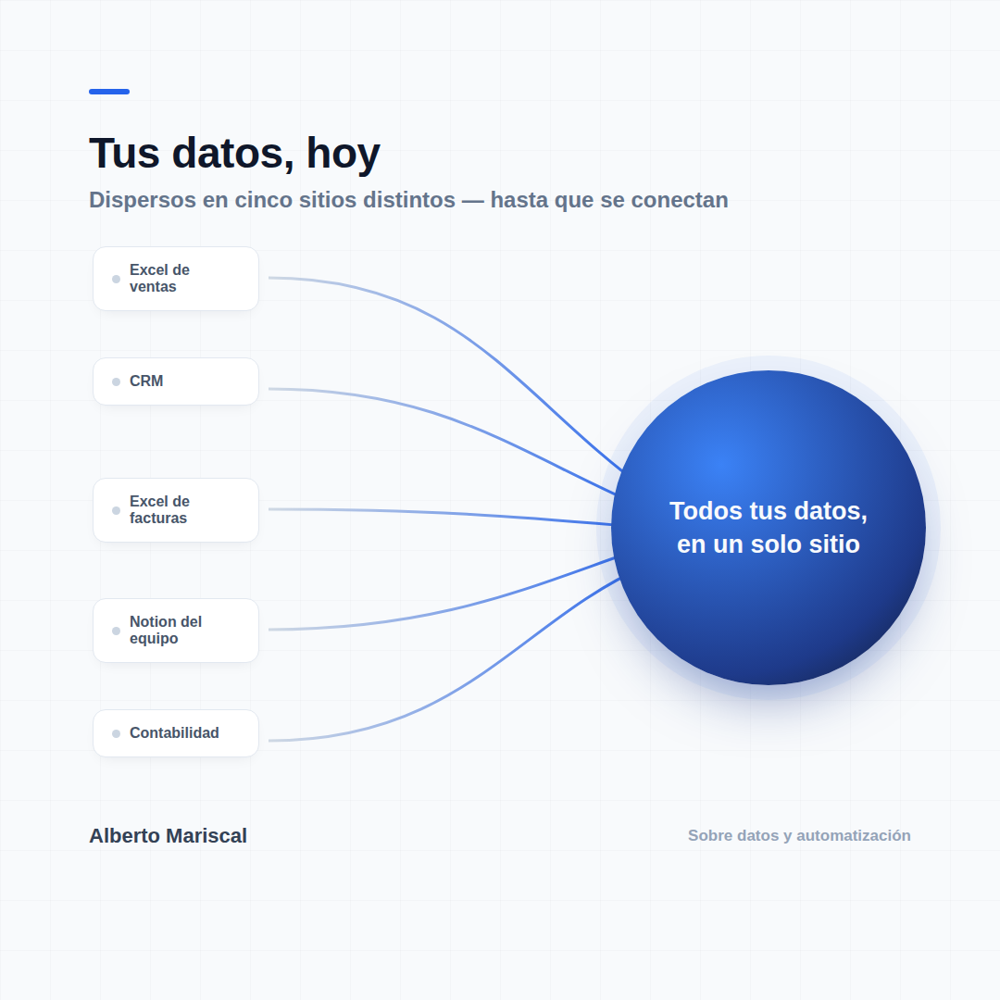

La primera vez que alguien me preguntó qué es un «datalake», le respondí así: imagina que toda la información de tu empresa —ventas, clientes, incidencias, contabilidad— en vez de vivir repartida en 15 Excels y 3 programas distintos, vive en un único sitio, ordenada, lista para que cualquiera pueda preguntarle algo y tener la respuesta en segundos.
Eso es un datalake. No es magia, y no es solo para empresas grandes: es, literalmente, tener tus datos en un solo sitio en vez de dispersos.

El problema casi nunca es la tecnología. El problema es que nadie se ha sentado a ordenarlo, porque el día a día no da tiempo. Y cuando alguien pregunta algo tan simple como «¿cuánto facturamos el mes pasado por cliente?», la respuesta tarda horas en vez de segundos.
Llevo años montando esto desde cero. Y la sorpresa es siempre la misma: no es que faltaran datos — es que estaban todos ahí, solo que nadie podía verlos juntos.